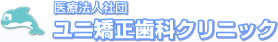
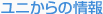
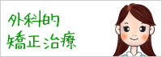
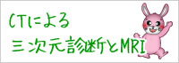
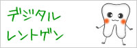
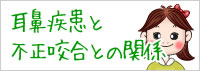
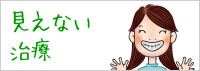
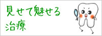

札幌市西区、琴似にある矯正歯科クリニックです。各種画像診断装置を利用して、成長期のお子様から成人の矯正、顎変形症の治療、顎関節症の咬合治療などに対応しております。

指定自立支援医療機関（育成医療・更生医療） 顎口腔機能診断施設

本稿は過去のコラムをアーカイブしたものです。ブラケット矯正における装置の見え方やゴムの色の一例について触れています。掲載内容は当時の情報であり、治療の効果や結果を保証するものではありません。詳細は診療時にご説明します。






ページの一番上に戻る